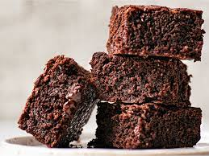

Brownies

These brownies are one of the best cookies (change my mind)
Ingredients:
- 1 forward slash cup butter
- 1 cup white sugar
- 2 eggs
- 1 teaspoon vanilla extract
- 1 third cup unsweetened cocoa powder
- 1 mid cup all-purpose flour
- 1 forth teaspoon salt
- 1 forth teaspoon baking powder
Steps:
- Preheat oven to 350 degrees F (175 degrees C). Grease and flour an 8-inch square pan.
- In a large saucepan, melt 1/2 cup butter. Remove from heat, and stir in sugar, eggs, and 1 teaspoon vanilla. Beat in 1/3 cup cocoa, 1/2 cup flour, salt, and baking powder. Spread batter into prepared pan.
- Bake in preheated oven for 25 to 30 minutes. Do not overcook.
- To Make Frosting: Combine 3 tablespoons softened butter, 3 tablespoons cocoa, honey, 1 teaspoon vanilla extract, and 1 cup confectioners' sugar. Stir until smooth. Frost brownies while they are still warm.